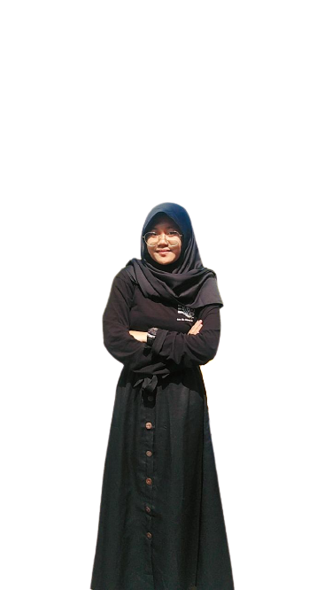

Hallo!
Saya Lia Reliya Berliana
Konten Kreator
Hallo! Saya Lia Reliya Berliana.
Saya siap bekerja di bidang konten kreator. Sebagai Konten Kreator tentunya membuat konten adalah hal yang tidak aneh dalam hidup saya. Dengan menggunakan imajinasi, kreativitas dan kemampuan yang saya miliki dengan sebaik mungkin di bidang ini untuk menciptakan konten - konten yang menarik.
Tanggal lahir:
05 November 2003
Email:
liareliya12@gmail.com
Jenis Kelamin:
Perempuan
No.Hp:
0821 - 1608 - 6733
Alamat:
Desa Cikaso No.84, Kuningan, Jawa Barat

Hobi
Saya memiliki hobi yang menarik dan mendukung dengan bidang pekerjaan sebagai Konten Kreator.
Membaca Novel

Jalan - Jalan
Berbicara di Depan Umum
Kemampuan
Kemampuan software yang saya miliki memang tidak terlalu banyak namun saya tipe orang yang mau belajar terutama dalam hal keterampilan dan aplikasi - aplikasi yang diperlukan dalam pengembangan bidang Konten Kreator ini.
Microsoft Word80%
Microsoft Power Point70%
Corel Draw50%
Adobe Flash50%
Adobe Premiere40%